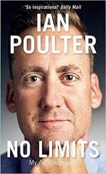
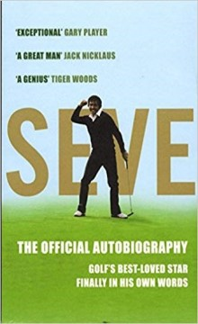
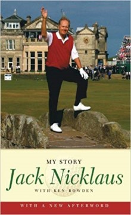
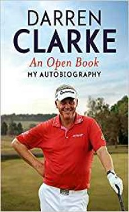
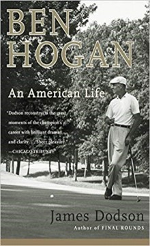

'A rattling read... Superbly written' Derek Lawrenson, Daily Mail 'Exhilarating, depressing, tawdry and moving... perfectly pitched biography' Dwight Garner, New York Times Based on three years of extensive research and reporting,
two of today's most acclaimed investigative journalists, Jeff Benedict of Sports Illustrated and eleven-time Emmy Award winner Armen Keteyian, deliver the first major biography of Tiger Woods - sweeping in scope and packed
with groundbreaking, behind-the-scenes details of the Shakespearean rise and epic fall of a global icon. In 2009, Tiger Woods was the most famous athlete on the planet, a
transcendent star of almost unfathomable fame and fortune living what appeared to be the perfect life - married to a Swedish beauty and the father of two young children. Winner of fourteen major golf championships and seventy-nine PGA Tour events, Woods
was the first billion-dollar athlete, earning more than $100 million a year in endorsements from the likes of Nike, Gillette, AT&T and Gatorade. But it was all a carefully crafted illusion. As it turned out, Woods had been
living a double life for years - one that exploded in the aftermath of a late-night crash that exposed his serial infidelity and sent his personal and professional life off a cliff. In Tiger Woods , Jeff Benedict and Armen
Keteyian dig deep behind the headlines to produce a richly reported answer to the question that has mystified millions of sports fans for nearly a decade: who is Tiger Woods? Drawing on more than four hundred interviews
with people from every corner of Woods's life - friends, family members, teachers, romantic partners, swing coaches, business associates, Tour pros and members of Woods's inner circle - Benedict and Keteyian construct a
captivating psychological profile of an African-American child programmed by an attention-grabbing father and the original Tiger Mom to be the 'chosen one', to change not just the game of golf, but the world as well. But
at what cost? Benedict and Keteyian provide the startling answers in a biography destined to make headlines and linger in the minds of readers for years to come.

NO LIMITS: MY AUTOBIOGRAPGHY
By Ian Poulter | 04/06/15 €17.99In Stock
Quantity
Synopsis
Ian Poulter is one of golf's most charismatic figures, with an appeal extending way beyond his sport. Here he tells his inspirational story, from his early rejection as an Spurs youth player, right through to his match-winning
contributions to successive European Ryder Cup Triumphs. Poulter went from an Assistant Professional staffing the club shop to a global superstar, turning pro when he still had a handicap of 4 but the drive and self-belief
to make it to the top. His infectious optimism, will power and flair have ensured he remains one of the biggest names on the tour. As well as insights into the crucial moments in his career, and the life of a professional golfer,
he talks about his passions
outside the game, including his own riotous brand of clothing. Just as Poulter's appearance on the scene came as a refreshing antidote to a sport that was staid and stuffy, so his own book is as forthright and passionate as Poults himself.

SEVE: THE AUTOBIOGRAPGHY
By Seve Ballesteros | 13/07/08 €19.99In Stock
Quantity
Synopsis
Once or twice a generation, an athlete transcends his sport - at last, here's Seve Ballesteros in his own words There are golfers, and there are golfers. And then there's Seve. Severiano Ballesteros was perhaps the most naturally
gifted golfer ever to have walked a fairway. From the moment his brother Manuel gave him his first club he was unstoppable. A few weeks before his seventeenth birthday he turned pro. Five years later he won the Open. A genius
had arrived. For the best part of two decades Seve dominated the golfing landscape. He played shots others could only dream of. With 94 wins as a professional (including 5 majors) he was a phenomenon, an athlete who transcended
his sport.
But Seve stood for more than simple excellence. Almost single-handedly, Seve gave European golf credibility; almost single-handedly, he made the Ryder Cup one of the greatest contests in world sport. And when, as captain, he finally lifted the trophy
on home soil in 1997, a whole continent rejoiced. His pride and passion have inspired millions, and we have taken him to our hearts. Here, for the first time, Seve tells his own story. From his humble beginnings right up
to the present day, here at last is the man behind the magic in his own words. Seve is utterly entertaining, blazingly charismatic and unique. Severiano "Seve" Ballesteros Sota was a Spanish professional golfer and a leading
sports figure. He won more than 90 international tournaments in an illustrious career. He first caught the attention of the sporting world in 1976, when at the age of 19 he finished second at The Open. He played a leading
role in the re-emergence of European golf, helping the European Ryder Cup team to five wins both as a player and captain. He won the World Match Play Championship a record-tying five times. He is generally regarded as the
greatest Continental European golfer of all time and won a record 50 times on the European Tour. Ballesteros died of brain cancer on 7 May 2011, aged 54.

JACK NICKLAUS: MY STORY
By Jack Nicklaus | 03/07/07 €18.20In Stock
Quantity
Synopsis
Over the half millennium and more that golf has existed, very few players have come within even sighting distance of Jack Nicklaus's incredible achievements. Counting his two Us Amateur Championships, Nicklaus was the winner of
twenty major championships and more than one hundred professional tournaments around the world. He was named "Golfer of the Century" in 1988 by the Pga. Jack Nicklaus: My Story, now with a new afterword, is Jack Nicklaus's
compelling, personal account of his legendary majors triumphs, along with many other competition highlights -- and some lowlights, too -- of one of the greatest sports careers of all time. Revealed with the unfailing candor
and
intensity that are his most distinctive personality traits, here is the Jack Nicklaus his legions of admirers, and even some of those close to him, have never known.

AN OPEN BOOK - MY AUTOBIOGRAPGHY
By Darren Clarke | 17/02/17 €12.99In Stock
Quantity
Synopsis
A golfer loved for his courage and charisma, Darren Clarke has the crowds behind him. They know he is a warm, funny raconteur who likes a Guinness, who both works hard and plays hard. More important, they know that this man pulled
himself up by his bootstraps, having lost his wife Heather to cancer, to triumph at the 2006 Ryder Cup. Just days before the start of the 2011 Open at Royal St George's, Darren's game had once again deserted him, leaving him
'putting like a man with blurred vision'. A month before his 43rd birthday he was not in a good place. But Heather was 'watching from above', the crowd were roaring him on, golf guru Dr Bob Rotella was telling him to 'go unconscious'
- and
something sparked inside him. The rest is golfing history. Born in Dungannon, Northern Ireland, Darren caddied for his golf course greenkeeper father, turning pro in 1990. He has played in four victorious Ryder Cup sides and beat his close friend Tiger
Woods in the 36-hole final of the 2000 WGC-Andersen Consulting Match Play. In 2002 he became the only player to win the English Open three times. In An Open Book he speaks candidly about fellow-players, coaches and golfing
psychologists; about how he was bullied at school, narrowly missed and IRA bomb and eventually set up a foundation to develop junior golf in Ireland; and about how he found personal happiness again, marrying Alison Campbell
in April 2012. Most vividly of all, he takes the reader down those rainswept fairways to the ecstasy of that final putt when, at his 20th attempt, he lifted the silver claret jug.

BEN HOGAN: AN AMERICAN LIFE
By James Dodson | 01/05/04 €8.90In Stock
Quantity
Synopsis
One man is often credited with shaping the landscape of modern golf. Ben Hogan was a short, trim, impeccably dressed Texan whose fierce work ethic, legendary steel nerves, and astonishing triumph over personal disaster earned him
not only an army of adoring fans, but one of the finest careers in the history of the sport. Hogan captured a record-tying four U.S. Opens, won five of six major tournaments in a single season, and inspired future generations
of professional golfers from Palmer to Norman to Woods. Yet for all his brilliance, Ben Hogan was an enigma. He was an American hero whose personal life, inner motivation, and famed “secret” were the source of great public
mystery. As
Hogan grew into a giant on the pro tour, the combination of his cool outward demeanor and invincible, laser-guided accuracy on the golf course froze formidable opponents in their tracks. In 1949, at the peak of his career, Hogan’s mystique was reinforced
by a catastrophic automobile accident in which he and his wife, Valerie, were nearly killed after being hit head-on by a Greyhound bus. Doctors predicted Hogan might never walk again – let alone set foot on another golf
course. But his miraculous three-year recovery and comeback led to one of the greatest performances in golf history when in 1953 he won the Masters, the U.S. Open, and the British Open (something that’s never been repeated).
In this first-ever family-authorized biography, renowned author James Dodson expertly and emotionally reconstructs Hogan’s complicated life. He discovers an intensely honest man handicapped by self-doubt, buoyed by the
determination to prove his own abilities, and unable to escape a long-buried childhood tragedy – the core of the Hogan “secret.” Dodson also reveals both the legendary devotion and eventual strain in Hogan’s sixty-two-year
marriage, and a Hogan rarely seen by the public: a warm, jovial man whose charitable spirit and sharp business sense enabled him to build the powerful golf equipment company bearing his name to this day. Ben Hogan: A Life
is the authoritative inside portrait golf fans have long awaited.